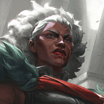
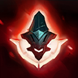
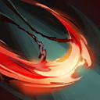
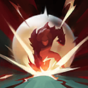
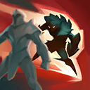

核心裝備
 星蝕
星蝕 黑色切割者
黑色切割者 席利妲咒怨
席利妲咒怨 死亡之舞
死亡之舞 守護天使
守護天使

以下為本站 7.2d 校正後的標準配置；實戰仍需依敵方陣容調整。


技能優先：Q > E > W

施放技能後輸入移動指令會向該方向衝刺，並強化下一次普攻的距離、傷害與攻速，同時返還能量。

第一次向前方半圓揮擊，外圈造成更高傷害；命中後短時間內可再次直線斬擊，第一個命中的敵人承受額外傷害。

獲得護盾並向前猛擊造成物理傷害；若護盾吸收傷害，猛擊傷害會提高。
揮舞雙刃傷害並緩速周圍敵人；若在施放後觸發被動衝刺，短暫延遲後會再次攻擊。

被動獲得物理穿透與技能吸血；主動閃現至指定方向最後方英雄身後並壓制，接著將其摔向前方。 7.2b 施放期間傷害減免為 10/20/30%，依目標已損失生命造成的基礎傷害為 10/17.5/25%。
1技一段 → 被動普攻 → 1技二段 → 被動普攻 → 3技
每次技能後都穿插被動普攻回能，避免只連按技能導致能量枯竭。
4技壓制 → 2技護盾 → 被動普攻 → 3技緩速 → 1技追擊
大絕落地先用護盾承傷，再靠被動衝刺與三技緩速黏住後排。
1技外圈 → 被動普攻 → 二段直斬 → 3技 → 強化普攻
第一段盡量用外圈命中，第二段直斬瞄準單一核心，再靠三技第二次掃擊收尾。
每次施放技能後輸入移動方向可觸發被動衝刺，並強化下一次普攻回復能量。清野時務必在技能之間穿插普攻，否則容易缺能量且降低輸出。
大絕可從遠處鎖定最後方英雄並壓制，落地後用二技護盾承受反擊，三技緩速接兩段一技持續追擊。側翼進場比正面硬衝更容易命中後排。7.2b 大絕減傷與斬殺降低，落點附近若沒有隊友，不宜單獨鎖進完整陣型。
連續位移雖多，但仍怕硬控與禁位移技能。先觀察波比、拉姆斯等控制是否交出，再用大絕或被動衝刺切入；擊殺後利用技能衝刺離場。
對局名單是本站依英雄機制與目前配置整理的參考，不等同固定勝率。
打野先維持標準刷野與節奏裝，只有敵方陣容或我方前排需求明顯時才調整。
觸發：敵方前排多，物件團與正面團戰會長時間卡在高生命目標上。
斷切能直接提高對高生命敵人的普攻傷害。
觸發：敵方能在你進場或搶物件前快速把你秒掉。
魔提斯深淵提供魔防與低血量魔法護盾，比單純增加輸出更能保住進場或持續輸出。
骨甲直接降低同一名敵人接續幾次技能或普攻的傷害。
觸發：進場或搶物件時經常被控制鏈直接中斷節奏。
先購買水銀飾帶取得主動解控，之後再合成水星彎刀；水銀飾帶是合成組件，不是另一件要與水星彎刀互換的成裝。
犧牲部分輸出型傳奇符文，換取韌性與緩速抗性。
觸發：敵方前排、鬥士或吸血核心能在物件團長時間回復。
生化龐克鏈鋸之劍提供物攻、生命與技能加速，適合近戰物理角色補重創。
觸發：我方陣容沒有可靠第一承傷點，團戰需要有人更早進場吸收注意力。
史特拉克手套用生命與低血量護盾增加第一波承傷，讓你能暫時扛起半前排角色。
提醒：「缺前排」不代表所有打野都要改坦裝；刺客、法師與射手打野硬轉坦通常會失去英雄價值。
7.2b 平衡更新（v79.4）：大絕傷害減免 30/40/50%→10/20/30%，依已損失生命造成的基礎傷害 20/30/40%→10/17.5/25%；切後容錯與斬殺力明顯下降。｜7.2a 打野正式版：技能名稱依 Riot Games 台灣《激鬥峽谷》安比薩英雄頁校正；星蝕、黑色切割者與席利妲咒怨方向交叉參考 WildRiftFire 7.2a 的打野替代配置。Tier 與對局為本站綜合評級。｜v54：完成打野第三批正式版，完整套用李星固定母版，補齊起手裝、核心三件、五件成裝、技能加點、三組連招、對局與前中後期節奏。
本站於 2026-08-27 依 Patch 7.2d 重新檢查此配置。 Tier、出裝、符文與對局屬於 Wild Rift Guide 的整理與分析，不是 Riot Games 官方推薦；版本改動後會再依官方公告與實戰資料校正。